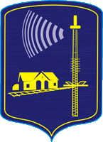

Добро пожаловать!
На этой странице вы узнаете подробную информацию о моем городе
Добро пожаловать!
На этой странице вы узнаете подробную информацию о моем городе
История Колодищ начинается со второй половины 19-го века, до этого момента местность представляла собой дремучие леса, изобиловавшие зверями и птицами. В 1867 году жители соседней деревни Березовка направили в эти места двух жителей - братьев Илью и Михаила Карповичей - они и считаются основателями Колодищ. Постройка железнодорожной ветки Москва-Брест в 1871 году значительно поспособствовала развитию поселка. Великая Отечественная война нанесла значительный урон Колодищам, тем не менее, в послевоенное время их развитие значительно ускорилось - здесь были построены средняя школа, клуб и детский сад. В 2008 году в поселке началось строительство многоквартирных домов, а 17 февраля 2011 года Колодищам был присвоен статус агрогородка. В настоящее время вынашиваются планы по включению Колодищ в городскую черту Минска.
В гербе Колодищей изображено железнодорожное полотно, здание станции и телевышка. Дело в том, что поселок возник как железнодорожная станция на линии "Москва-Брест",
в Колодищах располагался Белорусский Республиканский Радиоцентр (разрушен во время войны), а в 1970 году построен Белорусский Телевизионный Центр, откуда вещает Белорусское телевидение.
Экономика Колодищ активно развивается, что связано с близостью к Минску, развитием инфраструктуры и повышением качества жизни.
Агрогородок привлекает жителей Минска своей более спокойной и экологичной атмосферой, что способствует росту спроса на жилье.
Более подробные новости можно почитать здесь: Колодищи-инфо
Здесь можете посмотреть достопримечательности города: Достопримечательности
Перейдите по ссылке, чтобы посмотреть карту Колодищ: Карта